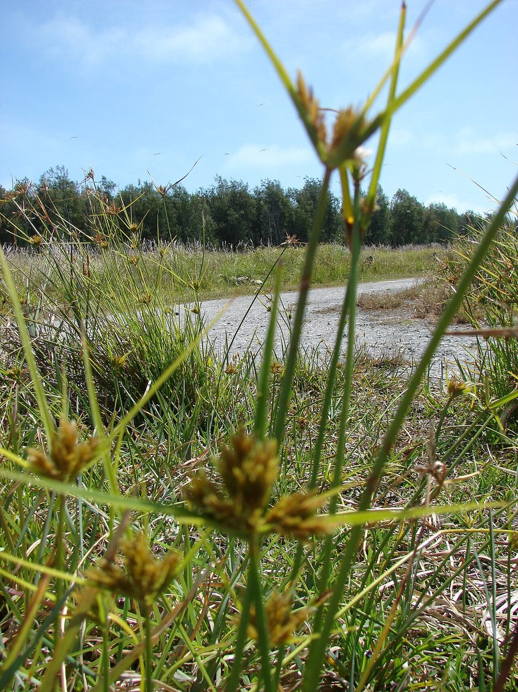
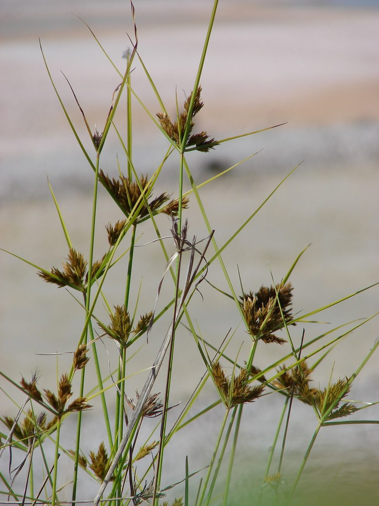

COMMON Beach strand Valley mouth
Cyperus polystachyos
puʻukaʻa · manyspike flatsedge, bunchy flatsedge



Quick facts
| Family | Cyperaceae |
|---|---|
| Scientific name | Cyperus polystachyos |
| Hawaiian name(s) | puʻukaʻa |
| English name(s) | manyspike flatsedge, bunchy flatsedge |
| Status | Indigenous (native, non-endemic) |
| Conservation | — |
| Coastal zones | Beach strand Valley mouth |
| Occurrence | A tufted native sedge of moist sand, salt-flat margins, and seep edges on Hawaiian coasts. On the roadless Kauaʻi coast it occurs at back-beach seeps and valley-mouth flats behind Kalalau and along the moist edges of Māhāʻulepū salt pans; pantropical distribution. |
How to identify
- Growth form
- Tufted perennial sedge 20–70 cm tall, forming discrete clumps of upright triangular stems from a short rhizome.
- Size
- 20–70 cm tall; clumps 15–30 cm across.
- Leaves
- Basal, linear and grass-like, 2–5 mm wide, shorter than or roughly equalling the flowering stems.
- Flowers
- Very small; the inflorescence is a dense head-like cluster of many flat brown to golden spikelets at the top of each stem, subtended by 3–6 leaf-like bracts that project well above the head — the overtopping bracts are diagnostic.
- Fruit / seed
- A tiny brown 3-sided achene enclosed in each spikelet.
- Bark / stem
- Slender wiry culms triangular in cross-section — pinch or roll one to feel the three flat ridges (the sedge / Cyperaceae sign).
- Where it sits on the coast
- Moist sand, salt-flat margins, seep edges, and wet valley-mouth flats. Not on exposed dry cliff or open sand.
Clinchers (features that lock the ID)
- Dense head-like cluster of flat brown-golden spikelets at stem top, with leaf-like bracts overtopping the head.
- Triangular stem in cross-section — a sedge, not a grass.
- Tufted growth 20–70 cm tall on moist coastal ground.
Look-alikes
- Fimbristylis cymosa (mauʻu ʻakiʻaki) — Fimbristylis is much smaller (10–40 cm), forms tighter compact button-like brown inflorescences without long overtopping bracts, and grows on drier, harder substrates. Puʻukaʻa's leaf- like bracts projecting well above the flower head are the key contrast.
- Cyperus rotundus (introduced nutgrass) — Nutgrass has purple-tinged reddish-brown spikelets on a more open umbel and produces small underground tubers (nutlets); puʻukaʻa has plain brown-golden spikelets in a dense head-like cluster and no tubers.
- Cyperus laevigatus (makaloa) — Makaloa is nearly leafless (stems are the visible tissue), with a small lateral head near the stem tip; puʻukaʻa has clear basal grass-like leaves and a terminal head with overtopping bracts.
Ecology
A pioneer of moist saline and freshwater-brackish coastal habitats. Its dense root system stabilizes moist sand and seep margins, and it is one of the more salt-tolerant native sedges of Hawaiian coasts. [16], [21], [22], [27]
Cultural significance
Puʻukaʻa is one of several native sedges of coastal wetlands but is less prominent culturally than the mat-weaving *Cyperus laevigatus* (makaloa). Its ecological role in coastal wetland restoration is recognized.